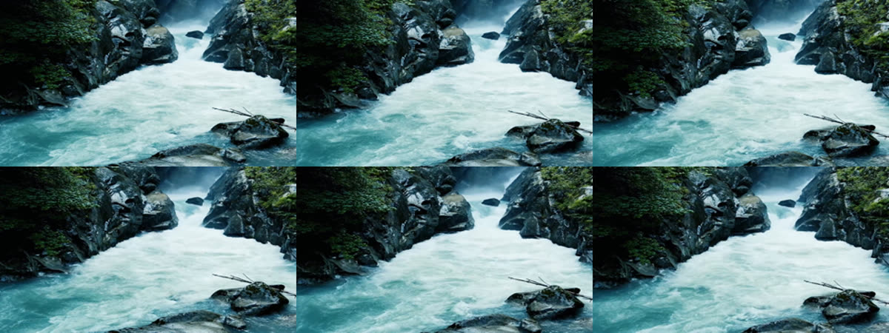
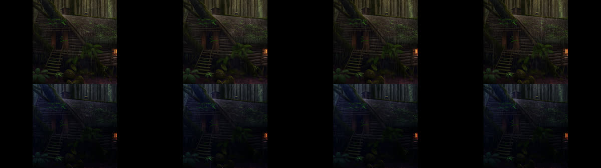
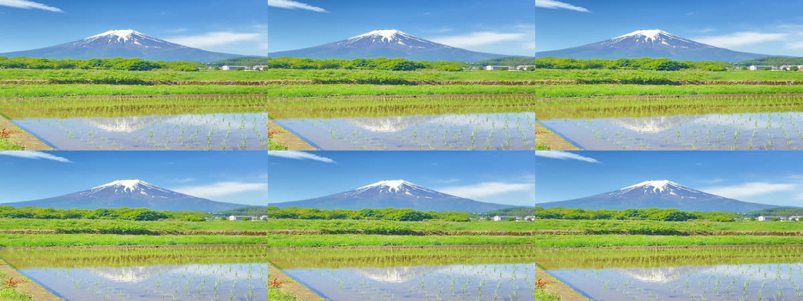

...and found 156 hours of duplicate footage in a 1M-clip dataset.
Give it any video clip and, in about a third of a second, it tells you whether that footage is inside a 1-million-clip AI training dataset, and exactly which seconds match. Trimmed, re-encoded, resized, shifted and lightly recoloured copies still match. It never stores the video itself, just small fingerprints.
Then I turned it on the dataset itself, comparing every clip with every other, to see how much of OpenVid-1M, a popular open text-to-video dataset, is the same footage over and over. A model trained on it sees that footage again and again, and whoever pays for data like this pays for it more than once.
OpenVid-1M: 1,019,956 clips, 2,051 hours.
With enough machines in parallel:
~20 min to fingerprint the whole dataset
~10 min to compare every clip with every other
~0.5 s to look up one clip against all of it (on a laptop)
156 hours (7.6%) are duplicate or near-duplicate footage.
Stock part: ~44% of 266 h. YouTube part: ~2% of 1,728 h. Total compute: roughly $10-12.
I started this project (Provena) wanting to answer "where did this video come from?": given a clip, find earlier copies, which part of which video it matches, and what changed. It works on whole clips, not single images, so trimmed, re-encoded, resized and time-shifted copies still match. It stores small fingerprints, never the video itself.
Training datasets turned out to be the most concrete place to point it: they're big, public, and nobody checks them frame by frame.
Every quarter of a second, I take a PDQ hash of the frame: 256 bits describing its overall layout of light and dark (Meta's open perceptual hash). Two frames are "the same" if their hashes differ in at most 31 bits. Counting differing bits is an XOR and a popcount, which CPUs do absurdly fast.
One matching frame proves little; lots of footage looks alike. So matching frames vote: each match says "the frame at 2 s in A appears at 7 s in B", i.e. B is A shifted by 5 seconds. A real copy produces many votes for the same shift; a look-alike scatters its votes across many shifts.
real copy: shift 5 s ████████████ 12 frames agree -> copy look-alike: shift -3 █ 0 █ 2 ██ 5 █ 7 █ scattered -> not a copy
Eight or more distinct frames agreeing on one shift (give or take a second) is a copy. That gives not just "these two videos match" but exactly which seconds.
The first version used FAISS to find each frame's 100 nearest neighbours, wrote every match into one big list, then sorted the list in numpy to count votes. I used it to audit the 359,513 stock clips of OpenVid (Pixabay, Pexels, Mixkit; ~266 h) and published a clean keep/drop list: about 23% of the stock footage was duplicate, mostly the same video listed under several category names, plus ~3% hidden duplicates under different IDs. I checked 60 random hidden pairs by eye; all 60 were the same footage, including recoloured copies, time-shifted cuts and partial overlaps.
Some things I learned the hard way:
Version one had three problems. The top-100 cap meant a real copy could be pushed out by look-alike frames (static shots fill the 100 slots). The match list grew with every match, so big runs needed big memory. And scaling to all of OpenVid-1M (~30M frames) needed something leaner.
So I rewrote the core in C++ (exposed to Python with nanobind). Instead of saving matches and sorting them later, each query video keeps a small scoreboard of (other video, shift) → votes. A match is counted the moment it's found and then forgotten, so there's no cap and no giant list.
for each video A:
scoreboard = {}
for each frame f of A, for each stored frame g of a later video:
if popcount(f XOR g) <= 31:
vote for (video of g, shift) and its two neighbouring shifts,
at most once per frame of A
every shift with 8+ votes is a copy; repeats at other shifts count too
Along the way:
--part i --of N) and combined; split runs give
exactly the same pairs as one run.
OpenVid-1M is ~7.5 TB in 186 zip files on Hugging Face. Each cloud machine streams one zip (parallel range requests, read in order), fingerprints clips as they arrive and writes ~1 MB fingerprint files to S3. Testing machine sizes showed downloads, not CPUs, were the limit, so small 4-CPU machines were the cheapest.
The first full run on Modal stopped halfway when the account hit its monthly spend cap, so I moved to AWS spot instances: 24 Graviton machines fingerprinted everything in ~4.4 hours, then 37 machines ran the all-against-all audit in ~1.2 hours. Total cost was roughly $10-12. The fingerprints for the whole dataset are 1.3 GB.
Those times were set by my AWS account's limits on how many machines can run at once, not by the work. Both steps split cleanly. With one 8-CPU machine per zip, fingerprinting takes as long as the slowest zip (~20 minutes); the comparison is ~37 machine-hours of work, so ~400 machines starting from a ready-made image finish it in ~10 minutes. The total cost stays about the same, since it's the same amount of machine time.
| Part of OpenVid-1M | Footage | Duplicate | Share |
|---|---|---|---|
| Pixabay | 211 h | 106 h | 50% |
| Pexels | 50 h | 10 h | 20% |
| Mixkit | 5 h | 2 h | 35% |
| YouTube | 1,728 h | 36 h | 2% |
| CelebV | 56 h | 1 h | 2% |
| All | 2,051 h | 156 h | 7.6% |
When two clips share footage, only the shorter one's matched seconds count as duplicate, with overlaps merged, so nothing is counted twice. The stock share (~44%) is higher than version one's 23% because version two also compares different segments of the same source video (version one skipped those) and has no top-100 cap. Leaving those segments out, the stock duplicates come to ~60-65 h, in line with version one.
The duplicates come from three different places:


What counts as a "duplicate" took some thought. Some matches are the same tripod shot a few seconds apart, or the same AI-made scene with different birds flying past. Not literally the same footage, but redundant for training, so I count them and call the result "duplicate or near-duplicate footage". I checked samples by eye at full size: on the YouTube side ~13 of 14 different-video pairs were the same or redundant footage, and 5 of 5 on the CelebV side. Those are small samples, so I treat them as a sanity check, not a measured precision.

The same kernel also answers "where does this clip appear?". Searching one clip against all 1.02M clips (29.7M frames) takes about 0.35 seconds on my laptop, fingerprinting included. I tested it with 10 random OpenVid clips, each edited four ways:
| Edit | Found |
|---|---|
| Trimmed | 8-9 / 10 |
| Half size + heavy compression | 9 / 10 |
| Caption bar burned in | 7 / 10 |
| Mirrored | 0 / 10 |
| Unrelated videos (not in the dataset) | 0 false matches |
One rainbow clip came back with 55 other copies in the dataset, which makes the duplicate problem visible from a single search.
The whole thing is a small Python package with the C++ kernel inside, provena-audit
(MIT licence), on PyPI:
pip install provena-audit provena-audit fingerprint ./videos # runs where the videos are; only fingerprints leave provena-audit audit provena_send/ # -> pairs.csv: which videos share footage, and where provena-audit lookup clip.mp4 --index provena_send/
Fingerprinting runs on the machine that has the videos and writes only hashes and timings under random IDs; the file names stay in a private folder. Whoever runs the audit never sees the footage.
provena-audit.